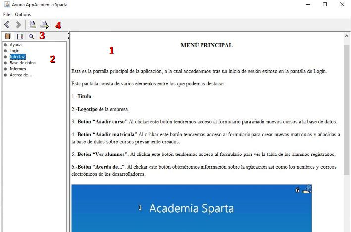
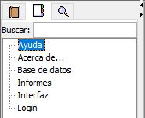
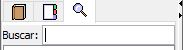

AYUDA
En este apartado contiene aplicaciones de los diferentes subapartados de la ayuda, así como una breve explicación de los mismos.
En la interfaz de ayuda podemos distinguir:
1.- Cuerpo de la fuente. En este espacio aparecerá el <body> de la fuente(html) que elijamos en el menú de la izquierda.
2.-Árbol de elementos. En este espacio se desplegarán todos los elementos incluidos en la carpeta “fuentes” de la ayuda, o lo que es lo mismo, todos los apartados proporcionados en la ayuda de la aplicación.
3.-Navegación entre “Tabla de Contenidos”, “Índice” y “Búsqueda”. Se trata de un submenú en formato tabular que da a elegir entre las tres opciones previamente mencionadas.
4.- Botones para imprimir ayuda y “Retroceder Página” o “Avanzar Página”.

En la pestaña de “Índice” (Segunda Pestaña) podemos acceder al árbol de elementos mostrados por orden alfabético.

En la pestaña “Búsqueda” (Tercera pestaña) podemos acceder a un buscador de palabras similar al Ctrl + F de la mayoría de las herramientas.
